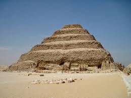
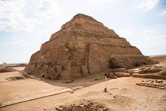
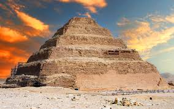

Piramida lui Djoser
Perioada Regatului Vechi este caracterizată printr-o bună organizație statală perfecționată, care controlează sistematic bunurile și oamenii din țară, fiind capabilă să asigure securitatea frontierelor, precum și aprovizionarea cu produse aduse din străinătate. De acum, mulțumită eficacității de care dă dovadă aparatul de stat bine stabilit, obținând suficiente resurse și mobilizând suficiente energii – faraonii pot edifica piramide monumentale, cu complexele lor. Perfecțiunea sistemului se măsoară după costul, în materiale și în muncă, al acestora.
Construcția primei piramide îi este atribuită lui Djoser (cca. 2617-2599 î.Hr., reprezentant al Dinastiei a III-a). Domnia acestui faraon este aproape necunoscută, excepție făcând faptul că a plasat pentru prima oară Peninsula Sinai, cu resursele sale miniere (aramă, turcoaze), sub control egiptean . Acesta este unul dintre cei mai faimoși faraoni ai Antichității, fiind cunoscut pentru imensul complex edilitar ridicat la Saqqara. Consilierul faraonului, arhitectul Imhotep, îi pregătea acestuia un complex mortuar diferit de cele ale predecesorilor săi, alegând piatra, mai potrivită decât cărămida pentru a înfrunta timpul. Astfel, era nevoie ca din carierele de pe malul drept al Nilului, lucrătorii să extragă blocuri de calcar, fasonate apoi de tăietorii de piatră. După aceea, miile de pietre tăiate erau transportate, apoi urcate pe podiș. Construcția acestui monument de tip nou a devenit cel mai important șantier din țară:aici munceau mii de meșteșugari, lucrători și țărani.
Elementul principal al complexului este piramida, care a suferit modificări succesive. Inițial, mormântul era o mastaba pătrată, ceea ce era mai puțin obișnuit deoarece construcțiile similare de până atunci aveau formă dreptunghiulară. În prima fază, construcția a fost lărgită în toate cele patru laturi ale sale, însă nivelul adăugat era mai mic decât mastaba originală. În urma celei de-a doua modificări a fost mărită numai latura estică a mastabei. Ulterior, mormântul a fost transformat într-o piramidă cu patru trepte. Ultima modificare a constat în adăugiri pe laturile nordică și sudică ale construcției, ajungându-se la o piramidă cu șase trepte inegale, ușor distorsionată. Edificiul construit din piatră locală și acoperit cu un strat de calcar, are o înălțime de 62 m . După moartea faraonului, sarcofagul său a fost depus la 28 de metri adâncime, în camera funerară, îmbrăcată în granit provenit din carierele de la Assuan. De jur împrejur se află culoare și camere funerare destinate probabil familiei faraonului Djoser. Imhotep a completat ansamblul de la Saqqara cu o mică încăpere închisă, care adăpostește statuia lui Djoser.